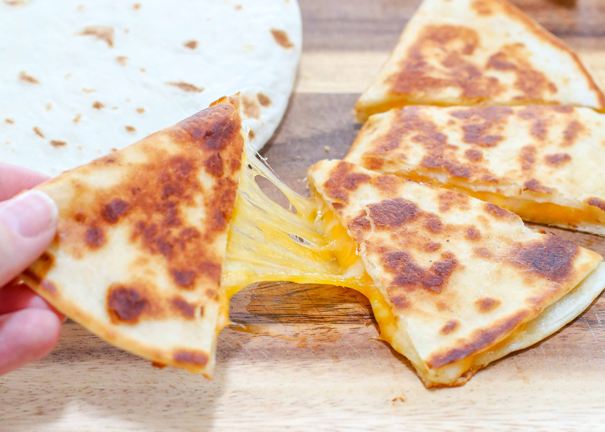

Quesadilla Americana

La Quesadilla Americana
Americans invented the Quesadilla Americana. It's the same as a normal mexican Quesadilla, but when you ask for it in a Mexican restaurant, you have to say "Una Quesadilla Por Favore" with a strong American Accent.
Ingredients
- Large flour tortillas
- Grated cheese such as mild or sharp cheddar, or Monterey Jack
- Olive oil or butter
Steps
- Learn how to Speak AMERICAN
- Love cheese and high calorie food in general
- 5th OF JULY BABY
- Ask for the Quesadilla
- AS PER USUAL, ENJOY